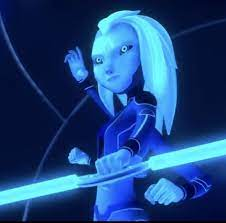
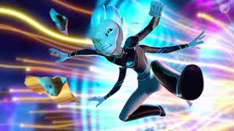

Varvatos Vex

En su forma Akiridiana, Varvatos tiene piel azul y cuatro ojos azules con esclerótica negra. Es más grande y musculoso que Krel y Aja. llevando una armadura azul brillante y verde azulado,
En su forma Humana, Varvatos es un anciano con cabello gris, ojos azules y bigote.su atuendo consiste en un suéter rojo, pantalones color crema con cinturón, una camisa de cuadros azul claro y zapatos marrones.
Es alguien intenso, exagerado, dramático, rencoroso y se regodea de otros hablando en tercera persona, pero aparte de eso es muy leal, servicial y amable con los que le rodean, hasta es capaz de proteger a sus seres queridos si incluso ni importa si arriesga su vida por ellos
Aja Tarrol

En su forma alienígena, Aja tiene piel azul, cabello largo azul eléctrico, ojos azules, esclera negra y cuatro brazos. Ella también tiene una cresta en la frente que la marca como la reina en espera, que recibió al final de "Tierra desconocida (Parte 2)". Ella usa un mono negro y azul con forros de neón azul.
En su forma humana, Aja tiene el pelo largo y rubio platino (que generalmente usa en un moño bajo con trenzas laterales) y piel blanca pastosa con pecas sobre la nariz.
Su atuendo consiste en una camisa a cuadros roja con botones, jeans y zapatillas rojas.
Krel Tarrol

En su forma alienígena, Krel tiene una piel azul turquesa eléctrica, cabello azul claro que se eriza, ojos azules con negra y cuatro brazos. También tiene una cresta en la frente que lo marca como el rey en espera. Lleva un mono negro y azul con forros de neón azul.
En su forma humana, Krel es un latino con piel morena y bronceada, ojos marrones y cabello castaño oscuro hasta los hombros. Su atuendo consiste en una camiseta azul con un garabato azul claro, pantalones de chándal azul marino, zapatillas blancas, calcetines verdes y un reloj en su muñeca izquierda.